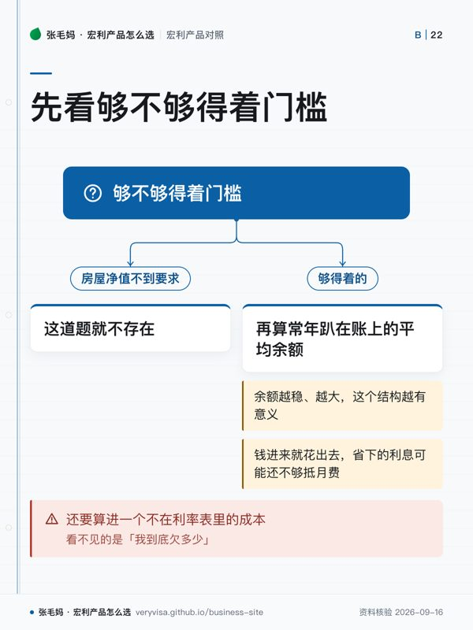

- 可比字段准入门槛、利率在哪一侧、月费与免收条件、账户结构
- 门槛一体化账户要房屋净值或首付 20%；活期账户开户无最低存款
- 比的不是同一个利率一个比借款利率，一个比存款利率（常规加促销）
- 看不见的成本房贷与日常账户合成一个之后，得自己盯住本金有没有真的在降
知识卡
不看正文也能拿到这一页的核心规则：先看导读，再看图。点图放大，左右翻页。
- 先看先看利率落在哪一侧：一边省贷款利息，一边让存款生息。
- 易漏Preferred 特惠限自住主要住所并满足 Preferred 结构要求。
- 下一步去按产品核对当时牌价和费用。

- 先看先走门槛分支；前一道不成立，后面的余额计算就不用继续。
- 易漏用子账户追踪投资借款时，分账户不等于利息自动可抵。
- 下一步去按税务问题核对借款当前的用途。
这一页只回答一个问题：手上有房贷的人，闲钱该放哪。 Manulife One 的逻辑是让正现金先去冲减负债，省下的是贷款利率那一侧的利息； Advantage Account 的逻辑是让这笔钱在存款利率那一侧生息。贷款利率通常高于存款利率， 但 Manulife One 有准入门槛和月费，也要求你接受「房贷和日常账户合成一个」的结构。
四个可比字段：
- 准入门槛：一体化房贷账户对首付或房屋净值有比例要求；活期账户开户无最低存款。
- 利率在哪一侧：一个比的是借款利率（Base Rate 与各固定期限牌价），一个比的是存款利率 （常规加促销）。
- 月费与免收条件：一体化账户有月费和按余额免收的规则，年龄还会影响费率；活期账户月费为零， 余额只决定日常交易是否免费。
- 账户结构：一个把房贷、信用额度和日常银行合在一起，并可开定期子账户和追踪子账户； 另一个就是一个储蓄支票合一的账户。
Manulife One：借款那一侧
Manulife One 把房贷、信用额度和日常银行放进同一个账户：工资和存款一进来就先冲减借款余额，省下的是贷款利息——它比的不是存款利率，而是「正现金和房贷负债要不要分开算」。
- Manulife One 是一体化房贷与银行账户，把房贷与银行账户、短期储蓄、收入和其他负债合在一起，存入的每一笔收入或储蓄立即冲减债务。✅源
- 准入门槛：购房首付不少于房价 20%，或转按／再融资时房屋净值不少于 20%。✅源
- Manulife One Base Rate 为 4.95%（2026-09-15 核对牌价，浮动）。✅源
- 5 年封闭固定利率牌价 4.94%；新客户 Preferred 特惠 4.69% APR，限自住主要住所并满足 Preferred 结构要求（2026-09-14 牌价）。✅源
- 其他固定期限：1 年 6.89%、2 年 6.34%、3 年 4.99%、4 年 5.29%、7 年 6.35%、10 年 6.69%（2026-09-15 核对牌价）。✅源
- 可循环使用的主账户额度上限为房产估值的 65%，65%–80% 之间的借款必须放在按期还款、还掉即注销的定期子账户里。✅源
- 最多可开 5 个定期子账户（term sub-account）和 15 个追踪子账户（tracking sub-account）。✅源
- Client Guide 举例用追踪子账户单独记录投资相关借款的利息，同时声明利息能否抵税取决于所得税法与个案。✅源
- Manulife One 等房贷账户里的正余额同样属于 CDIC 合资格保障范围。✅源
- Unlimited Daily Banking 月费 $16.95（60 岁及以上 $9.95），月末全账户正余额合计 $5,000 或以上免收。✅源
完整条款见 Manulife One 产品页。
Advantage Account：存款那一侧
Advantage Account 是储蓄和支票合一的活期账户：每一元都计息，又能刷卡、交账单、发 e-Transfer、和本人其他银行账户免费互转；最适合放「随时要用、又不想零利息躺着」的活钱，不适合替代长期投资。
- 新开个人非注册加元 Advantage 账户的促销利率为 3.00%，由常规 1.50% 加促销 1.50% 构成，两者都是浮动利率。✅源
- 促销从开户当日起算 730 天，只对净新增外部资金有效，合资格余额上限 $500,000。✅源
- 促销开户窗口为 2026-07-02 至 2026-10-30（官方注明利率与优惠为 2026-09-09 口径，可随时变更）。✅源
- 促销期结束后按当时的常规浮动利率继续计息，常规利率若变动，促销期内的合计利率也同步变动。✅源
- 每位客户限一个促销账户，提款会相应减少合资格存款余额；「净新增」的完整定义以官方条款 PDF 为准。✅源
- 利息按每日日终余额计算、按月支付，不设最低余额要求。✅源
- 账户月费 $0。✅源
- 余额 ≥$1,000 时，THE EXCHANGE 网络 ATM 取现、Interac Debit、账单缴费、发送 e-Transfer 免费。✅源
- 余额 <$1,000 时：Debit、账单缴费、发送 e-Transfer 各 $1，加拿大境内 ATM 取现 $1.50，境外 ATM 取现 $3.00。✅源
- 无论余额多少，资金转账（转入与转出）、预授权扣款、写支票始终免费。✅源
- Debit 卡支持 Apple Pay、Google Pay、Samsung Pay。✅源
- 设普通话专线 1-888-226-6411 与粤语专线 1-888-226-6406。✅源
- Manulife Bank 是 CDIC 成员，合资格存款按 CDIC 规则受保护。✅源
- 同系列其他账户现行利率：US$ Advantage 0.20%，TFSA／RRSP／RRIF Advantage 各 1.05%，Business Advantage 1.45%。✅源
完整条款见活期王产品页。
怎么选
先看够不够得着门槛：房屋净值不到要求，这道题就不存在。 够得着的，再算你常年趴在账上的平均余额有多少——冲减债务省下的是按日计的贷款利息， 余额越稳、越大，这个结构越有意义；如果钱进来就花出去，省下的利息可能还不够抵月费。
还要算进一个不在利率表里的成本：把房贷和日常账户合成一个之后，看不见的是「我到底欠多少」。 习惯了余额一直在动的人，要先确认自己能盯住本金有没有真的在降。
用子账户追踪投资借款、指望利息抵税的，先读借来的钱，利息能不能抵税—— CRA 看的是借款当前的用途，分账户只是让追踪更容易，不等于自动可抵。
事实来源
该问经纪的问题（抄下来直接问）
- 我每月工资进账后平均留在账户里多少天、多少钱？按这个现金流算，Manulife One 一年能比普通房贷少付多少利息，要不要做个数值案例？
- 我既有自住房贷又打算借钱投资或出租，用追踪子账户怎么分开记，哪些要先问会计师？
- 如果我或配偶未来可能离开加拿大或发生身故，这个账户的违约条款会怎么触发，需要提前准备什么？
- 我现在放在主银行支票和储蓄账户里的钱，哪一部分算「净新增资金」能拿到促销利率，怎么转进来才不白转？
- 按我家每月进出的现金，账户余额能不能稳定保持在免日常交易费的水平？主银行账户要不要留着？
- 促销到期后常规利率如果下调，这笔活钱下一步该转 GIC、TFSA 还是继续留着？
- 这一页的数字核对日期是哪天？到我签字那天，哪几个会变？
- 同样的需求，除了这个产品还有哪些选择，为什么你不建议那几个？
去论坛讨论
音视频与笔记本
- nb-manulife-bank
本页是公开资料的整理与对照，不是官方文件，也不构成针对你个人情况的保险、投资或税务建议。产品条款、利率与费用以机构当期官方文件为准；税务处理以主管机构原文与持牌专业意见为准。数字会变，看到本页请对一眼「核对日期」。